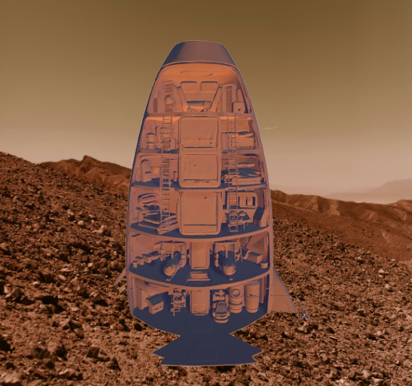
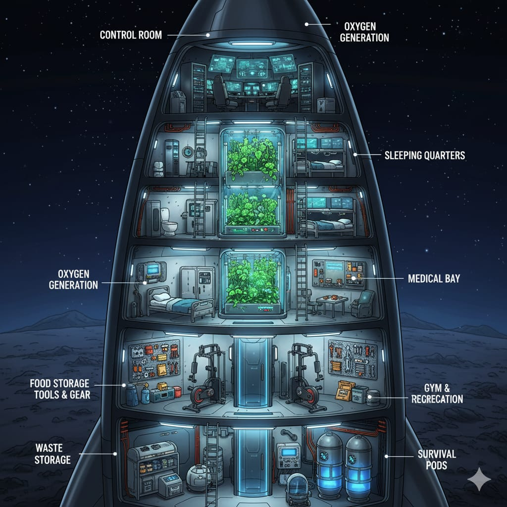

Our
Home
3D Model
3D Model:
Astro Home:
Your browser Doesn't Support This Video
What in The Home:
Control Room
Oxygen Generation
Solar Cells
Fuel Storage
Food Storage
Water Storage
Medical Bay
Waste Storage
Three Sleeping Quarters
One Bathroom
One Gym
Survival Pods
Real-World Size and Details for Each Room:
Main Living Area:
Approximately 320 m³ for three astronauts, featuring suspended sleeping bunks, a kitchenette, and a dining table.
Private Bathroom:
An experimental shower (often replaced by towels and dry shampoo due to complexity), toilet, and sink.
Gym/Exercise Area:
Equipped with a stationary bike and resistance bands to maintain muscle and bone health.
Control Room:
40 m³ (housing navigation systems and monitoring stations).
Oxygen Generation System:
15 m³ (a compact, pressurized life-support unit).
Solar Cells:
25 m² (externally mounted on the station's surface).
Fuel Storage:
30 m³ (safely insulated and contained).
Food Storage:
20 m³ (combination of refrigerated and dry-goods storage).
Water Storage:
15 m³ (processing and storage tanks).
Medical Bay:
15 m³ (equipped for emergency and primary care).
Waste Storage:
10 m³ (sealed recycling and containment system).
Survival Pods:
12 m³ per pod (total of 3 pods for crew evacuation).
Survival Duration for 3 Astronauts:
Primary Limiting Factor:
Food and water supply
Estimated Duration:
6 to 12 months
Details:
With fully stocked food storage (20 m³) and water storage (15 m³)
Advanced Self-Sufficient Station:
Primary Limiting Factor:
System reliability and spare parts
Estimated Duration:
2 to 5+ years
Details:
Requires advanced systems like plant greenhouse, advanced water recycling (98%+ efficiency), and waste recycling
Emergency Scenarios (System Failure):
Oxygen System Failure:
Minutes to hours
Power System Failure:
Hours to days
Waste Management Failure:
Days to weeks
Advantages:
Comprehensive Life Support:
Integrated oxygen generation, water storage, and waste management systems ensure long-term sustainability
Safety Redundancy:
Three separate survival pods provide multiple emergency evacuation options for the crew
Efficient Space Utilization:
Compact yet functional design maximizes usable living and working space within limited volume
Health Maintenance Focus:
Dedicated gym area and medical bay address astronaut health concerns in microgravity
Sustainable Power Supply:
Solar cells provide renewable energy source reducing dependency on limited fuel reserves
Research Capability:
Well-designed layout supports various scientific experiments and observations
Proper Zoning:
Separation of living quarters, control room, and storage areas creates logical workflow
Adequate Storage Capacity:
Sufficient food, water, and fuel storage for extended missions
Crew Comfort:
Private sleeping quarters and bathroom facilities maintain morale during long missions
Modular Design:
Clear separation of systems allows for potential future expansions or modifications
Emergency Preparedness:
Multiple backup systems (oxygen, power, evacuation) enhance overall safety
Balanced Layout:
Optimal distribution between living space, work areas, and essential systems
Disadvantages:
Very limited space — Astronauts would live in extremely tight quarters, leading to discomfort and stress.
Single-point failure risk — A critical failure in structure, power, or shielding could compromise the entire station.
Radiation protection issues — Walls may be too thin to shield astronauts from cosmic rays and solar storms.
Limited redundancy — Centralized systems mean failure of oxygen, food, or recycling units could be catastrophic.
Waste management difficulty — Storing waste in a small sealed environment risks odor, contamination, or leakage.
High energy demand — Farms, medical bay, gym, and survival pods require continuous power, making the system fragile.
No expansion possibility — Unlike the ISS, the design cannot grow with additional modules.
Psychological strain — A cramped, vertical stacked design offers little variation, affecting mental health on long missions.
Model Images

Model view from the outside

Model view from the inside
Home Page